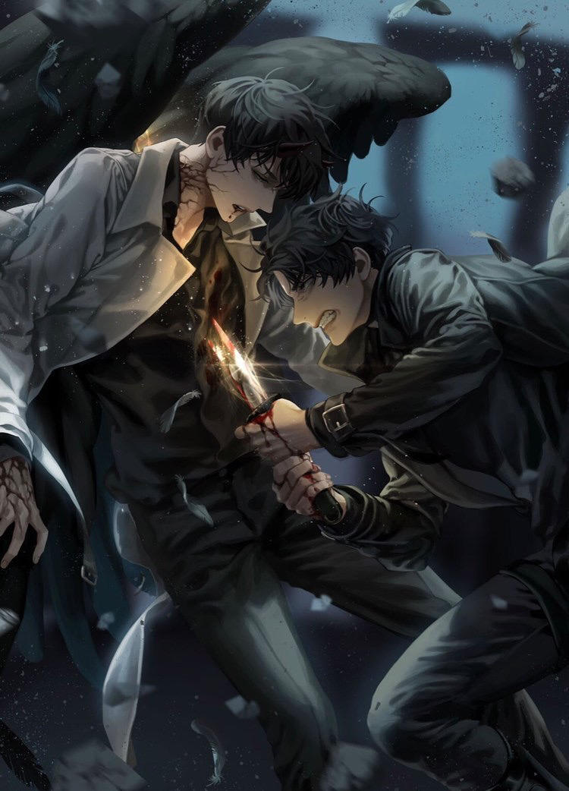

Yoo Joonghyuk is the protagonist of the light novel that Kim Dokja reads called "Ways of Survival". He is an regressor who went back in time countless times and expierience the same tragedies
over and over again. Despite all this he remains strong and forges on. He is often described as a cold and unyielding person. All his party members are somewhat afraid him. Kim Dokja is the only one
who truly knows him for who he is. His mission throughout his regressions is to see the ending of the scenarios. He has countless strategies and abilities and is the strongest on the team.
He is often put in the role of a leader on any commisions or quests. He is the powerhouse of the party.
Honestly the one of the best arcs, in my oppinion. It shows Yoo Joonghyuk, who has been alone throughout the scenarios with no one to truly call his companion, being forced to kill
his only friend, Kim Dokja. It really shows how the normally stoic main character of "Ways of Survival" has his weak sides when coming to people he genuinely cares about. Kim Dokja
once again shined a light to another character. He willingly sacrafices himself (again) for the sake of minimizing his party's harm. Yoo Joonghyuk being more reluctant than ever, chooses
what is best for his, Han Sooyoung, and Kim Dokja's party, and pierces Kim Dokja's heart.

"My body slowly sank down and Yoo Jonghyuk held onto me. 'Kim Dokja.'
'it was a really great story. Isn’t that right?'
Yoo Jonghyuk stared down at me silently. I couldn’t find any words and just watched. It was as if I had always been meant to do this.""
Unique Abilities and Attributes
Regressor
It allows Yoo Joonghyuk to go back to the start of the Scenarios. It activates automatically upon near death situations or when he does it automatically.
Memories and some skills are retained while equipment and [stories] are lost. Essentially allows him to replay the scenarios until he succeeds.
Regression Depression
An attribute gained through hundreds regressions. Main cause is the fact that Yoo Joonghyuk fails to protect someone once again and replays the suffering over and over
until he gets over it. It puts him in a trance-like state.
Life Lived to the Fullest(sponsored)
In Yoo Joonghyuk's first turn also known as the 0th turn, he has no knowledge of the scenarios and the tragedies ahead. This ability allows him to gain immense luck through
the Demon King of Salvation (aka: Kim Dokja's constellation name). The price is that he loses 25 years of his life for this ability. He only gains this ability once.
Breaking the Sky Swordsmanship
His fighting style when he reaches the transcendence stage. It is taught by his master: Breaking the Sky Saint. Very useful in the later scenarios.